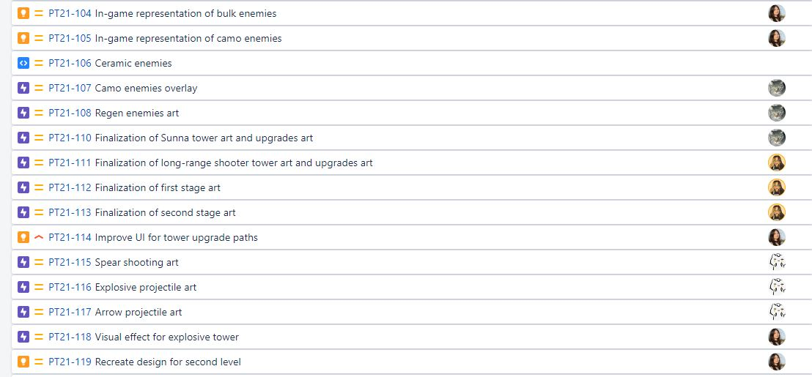
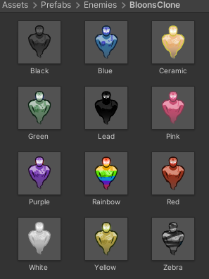

Studio-wide & Project Tower Meetings
Over the past 2 weeks, I've run 2 studio-wide meetings: 10/24 and 10/31. Once again, I have studio members pair up to peer-playtest. I find that this is a more interactive way to ensure that all members are updated on the progress of both projects. After the studio-wide portion of the meetings, I run the Project Tower meetings. These usually run a little longer and consist of more discussion.
During Project Tower meetings, I typically start off with standups (keep in mind that there are only 10 members, so this goes by quickly). I also have members share interesting feedback that they gathered from peer playtesting. In the meanwhile, I add their observations about the game to our sprint goals page. An example can be found here.
After this, I briefly playtest the latest build of Project Tower for all members to see. During this playtest, we quickly gather additional notes and observations. With all that done, I create tasks in the backlog and assign them to individual members based on their preferences. For a smaller project, this meeting format has been effective.
Communciation with Members & Task Assignment
This is fairly straightforward. I'm always joking that at any given point I have about 10 WolverineSoft-related pings in my Discord backlog. I spent a good amount of time this sprint both clearing things up and asking clarifying questions. Overall, communication in Project Tower is still very robust. It seems our initial momentum is slightly cooling down, which is to be expected.
Unfortunately, both playtests that were scheduled for the latter half of the sprint were cancelled. We did, however, have the opportunity to playtest with Jordan Ajlouni on Wednesday 10/20. As usual, we received great feedback.
Finally, like I mentioned before, I spent a great deal of time this sprint creating and assigning tasks. As usual, Nikhil and Crystal take care of programming and audio task creation respectively. While I define priorities and suggest tasks, those two are the ones directly creating Jira tasks for the two departments. It's a huge help. On my end, I largely focus on creating/communicating art and design tasks. It seems that members generally have enough to do to fulfill their hours commitment. It's been a bit difficult getting members to let us know (before it's too late!) that they don't have enough to work on. Regardless, it doesn't seem that this has been a big problem. An example of a few tasks in our Pre-Beta I sprint can be seen below.
Programming & Design Work
This sprint, I've done quite a bit of programming and design work. Before that, here's a mildly interesting tangent. I'm currently taking EECS 481: Software Engineering, and it's already one of the most useful classes I've taken. We go over several concepts that I've found highly relevant to both my experiences in the industry as well as to the Studio. Among these has been Requirements Elicitation: the principle that neither the client nor developer truly know what is wanted, and therefore requirements for a software must be "discovered" through a variety of processes. In the Studio, our team is both the client and the developer to a degree.
Why am I mentioning this? I find that it relates to the more unfortunate side of a studio project. It is incredibly difficult to encourage members to feel ownership over the project, even with a team as small as this. While everyone is able to implement features efficiently and create incredible assets, there are only around 2 or 3 of us who feel comfortable enough to integrate all these separate systems into a working whole. Assigning integration-related work to others is a problem of requirements. Integration requires a heavy understanding of how separate elements in the game should tie together, and involves a certain degree of "discovery" that not many are comfortable with. For example, it's not enough to tell a member to implement A into B; a list of edge cases and expected behaviors should be provided, and even then, additional requirements usually appear along the way. It takes a degree of confidence (and a lot of time) to work through these.
In any case, I bring this up as it relates to why I've been doing programming and design work. If future studio leads can overcome the challenge of having all members view the project with equal ownership, I think they will be in a much better place.
One of my primary focuses this sprint was adding in most enemy types and recreating 40 rounds of Bloons TD 6 for the sake of playtesting. I was able to create all enemy "layers", from red to ceramic. In doing this, I made significant modifications to the existing system for changing-enemies-upon-damage (e.g. when a blue bloon pops to a red bloon) to remove some redundancy and make things a lot easier for design.
Previously, enemy progression (e.g. green -> blue -> red) had to be manually hardcoded into every enemy prefab. I changed this system so that a single scriptable object controls the global enemy progression. The scriptable object contains an array of the following struct:
[System.Serializable]
public struct EnemyStage {
[Tooltip("The name of this enemy")]
public string name;
[Tooltip("The sprite associated with the enemy")]
public Sprite sprite;
[Tooltip("A multiplier applied to the speed of the enemy")]
public float speed;
[Tooltip("The health at which an enemy switches to this type")]
public float healthToChange;
[Tooltip("A toggle for the visibility of the enemy")]
public bool camoflauged;
};
I also made significant modifications to the in-game UI to "pretty" it up and make things a bit more clear. I forget if we went over it in EECS 494, but based on the amount of people who don't do it, I think it should be emphasized: use anchor points! It breaks my heart everytime I see someone manually setting the positions in the rect transforms of UI elements. It makes scaling so nasty. I had to spent quite a bit of time adjusting this.
Art Work
Finally, I also did a bit of art this sprint. This included the UI difficulty icons, UI "play" and pause icons, the temporary title art, and a few narrative portrait drafts. Art is rough. These are all displayed below.
Conclusion
I've definitely been getting busier lately, and I think this has been the case for every member of the studio. Regardless, I think we're in a very good place for having just hit the end of Alpha. As long as we keep this up for the next 4-6 weeks, we'll have something very solid for the EECS 494 showcase. That's it for this dev blog - see you in 2 weeks!